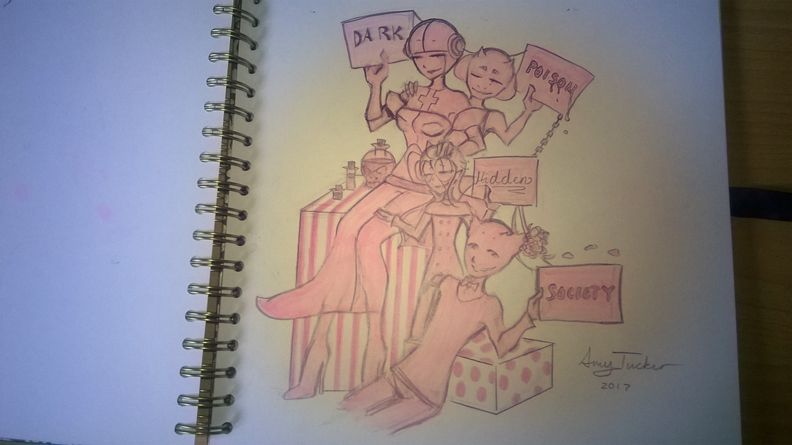

Here is another sketch! Cause that’s pretty much all I ever post on this blog! WOOO!
This is a sketch of characters from my comic Mystery Club. The pink colour was added by hand with copic markers because copic markers are seriously amazing! If you are an artist and you have never used them then I’m telling you now, YOU SHOULD!
The yellow light was added using Photoshop, it doesn’t look all that great but that’s due to the fact that I was rushing because I had a lot of pictures to edit. PLEASE FORGIVE ME!!
Amy